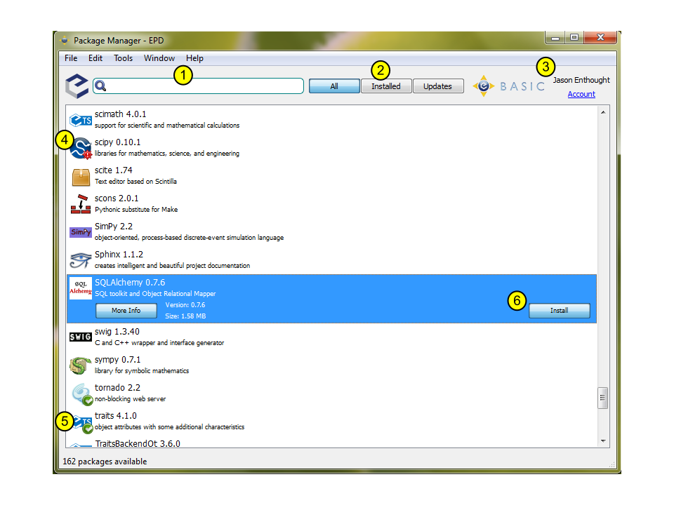

The Package Manager is designed to make it easy to discover and manage the Python packages available with the EPD Subscription service. It provides a convenient interface for finding and installing available packages, and for viewing, updating, and removing installed packages.
Please note these key areas of the Package Manager:
1. Search bar: quickly search the names and descriptions of the available packages. For example, typing statistic immediately filters the list down to six packages.
2. Package filters: this set of three buttons filters the display to show either all packages, all installed packages, or only those packages for which updates are available.
3. Subscription status: displays the name of the account currently in use and the subscription status of the account. This can be a useful troubleshooting tool, if a package is shown as unavailable, that you believe should be available. You can set your account information via the Preferences window. (Edit->Preferences on Windows and Linux, or EPD->Preferences on Mac OS.)
4. Update available indicator: the red exclamation point added to the bottom right corner of the SciPy logo indicates that a newer version is available for installation. When this indicator is showing, the version number shown is the version number available, not the currently installed version. (Workaround to see the current version number: look at that package with the “Installed” package filter.)
5. Installed indicator: the green checkbox added to the bottom right corner of the Traits logo indicates that this package is installed and up-to-date.
6. More Info, Install buttons: selecting a package, as shown above for SQLAlchemy, provides two additional buttons: a “More Info” button and either an “Install” or “Remove” button. “More Info” displays additional information about the package such as what is included and the dependencies. Clicking “Install” installs the package into your user Python environment or updates the package to the most recent version. Conversely, if the package is already installed and the button is labeled “Remove” then the package is uninstalled.
Two other indicator icons may be shown in addition to 4 and 5, but are not illustrated in the above picture:
If you believe that one of these indicators is shown in error, check that the correct user name and subscription status is shown in the subscription status area of the Package Manager window (area 3 in the screen image above), or contact epd-support@enthought.com.